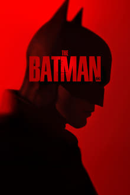
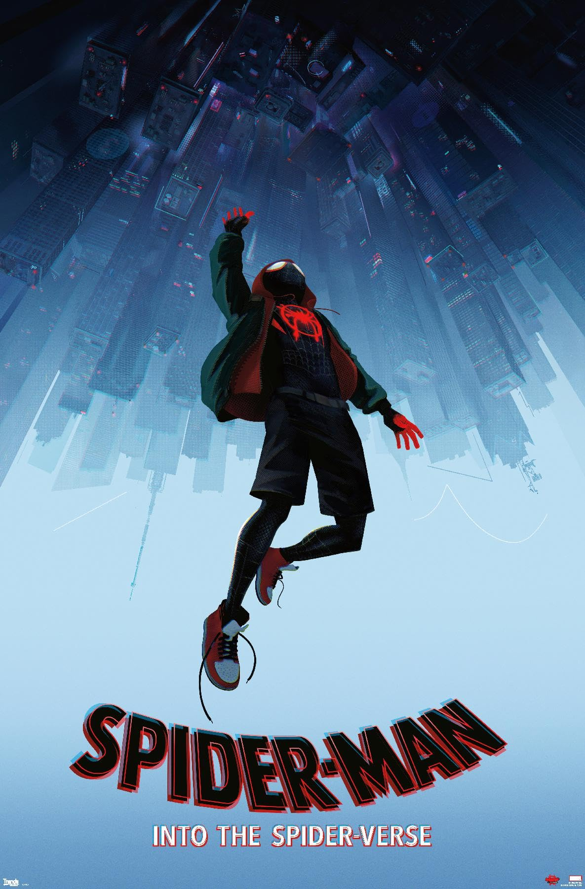
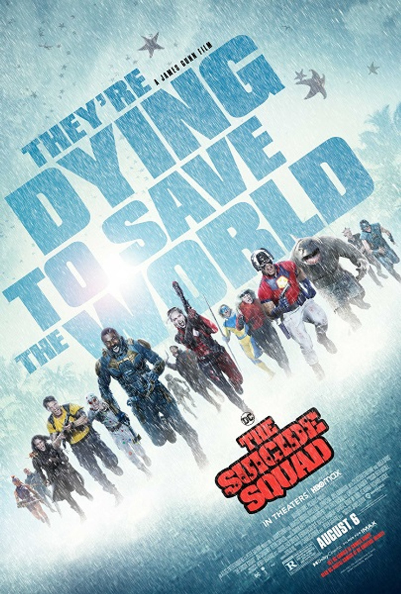
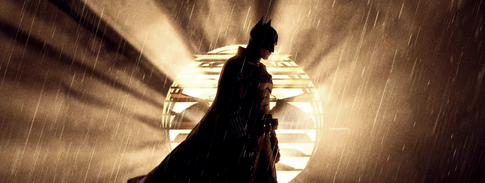

<!DOCTYPE html>
<html lang="en">
    <head>
        <meta charset="UTF-8">
        <meta name="viewport" content="width=device-width, initial-scale=1.0">
        <title>Html Potluck</title>
        <link href="css/style.css" rel="stylesheet">
    </head>
    <body>
        
    </body>
</html>

<head>
    <h2>A Special "Super" Movie Night Showcase</h2>
</head>
<body>
    
        
         
    <p>
        <h3>The Batman</h3>
    </P>
    ,
    <p>
        Batman ventures into Gotham City's underworld when a sadistic killer 
        leaves behind a trail of cryptic clues. As the scale of the 
        perpetrator's plans become clear, he must bring justice to the abuse of
         power and corruption that plagues the metropolis.
    </p>
    <p>
        
    </p>
    <p>
        Bitten by a radioactive spider in the subway, Brooklyn teenager Miles
         Morales suddenly develops mysterious powers that transform him into 
         the one and only Spider-Man. When he meets Peter Parker, he soon 
         realizes that there are many others who share his special, high-flying 
         talents. Miles must now use his newfound skills to battle the evil 
         Kingpin, a hulking madman who can open portals to other universes and
          pull different versions of Spider-Man into our world.
    </p>
    <p>
        
    </p>
    <p>
        The government sends the most dangerous supervillains in the world
         -- Bloodsport, Peacemaker, King Shark, Harley Quinn and others -- to 
         the remote, enemy-infused island of Corto Maltese. Armed with 
         high-tech weapons, they trek through the dangerous jungle on a 
         search-and-destroy mission, with only Col. Rick Flag on the ground to
         make them behave.
    </p>
</body>